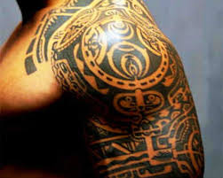
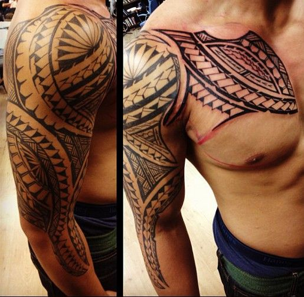
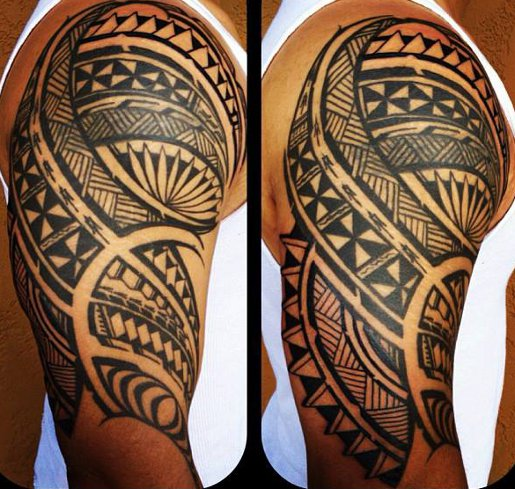
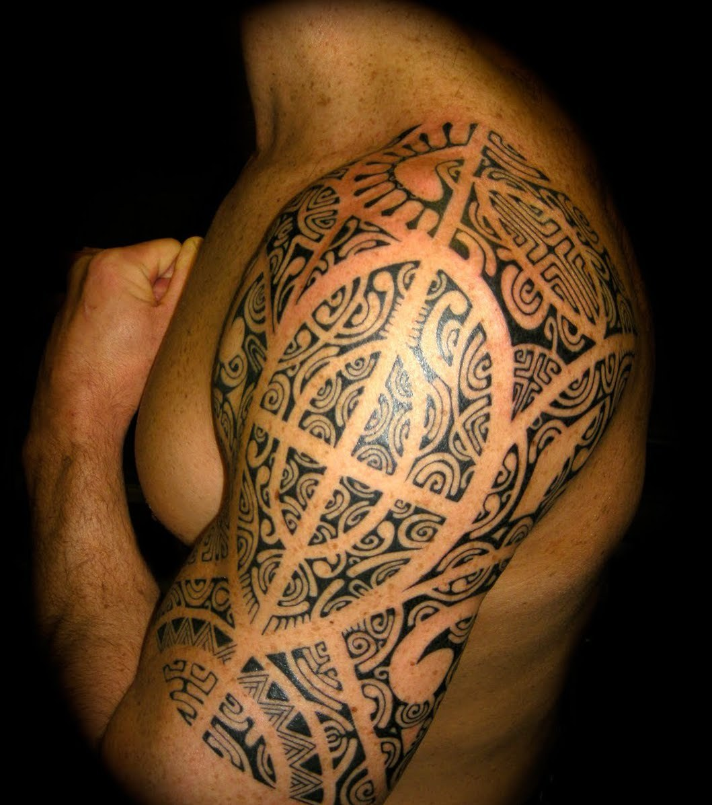
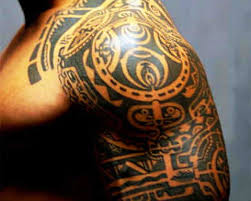
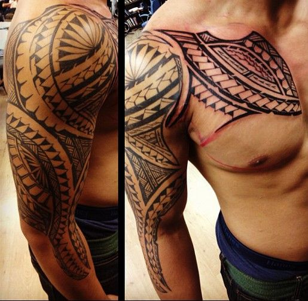
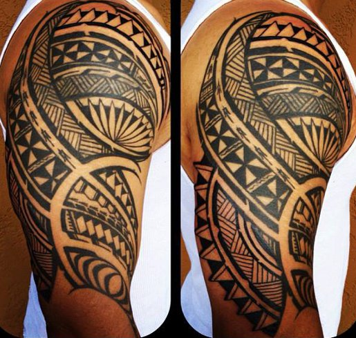
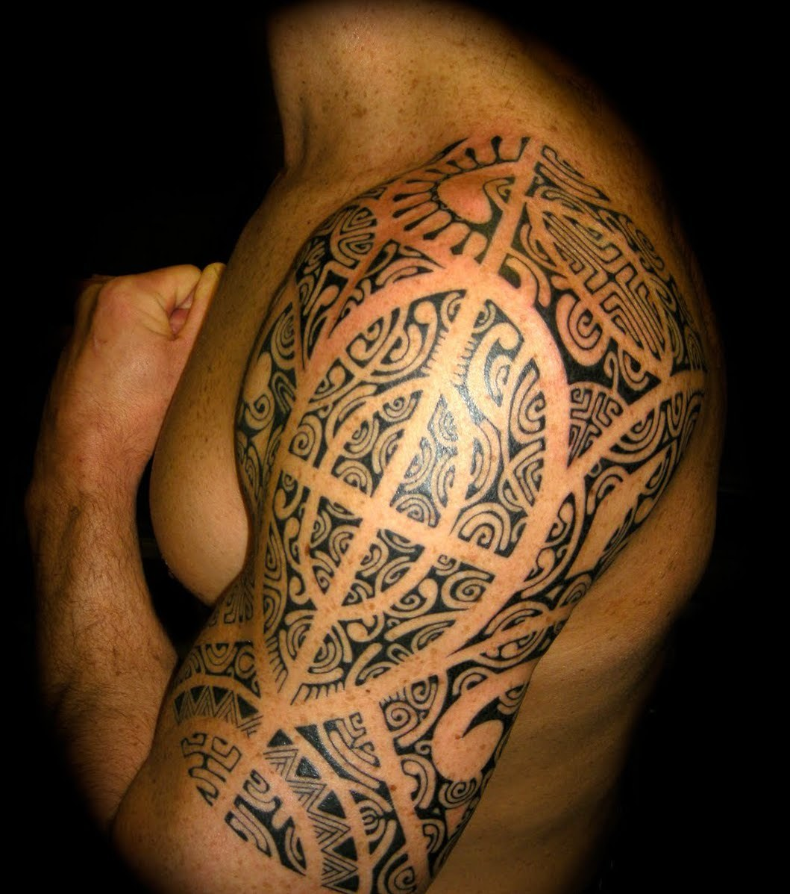

Le salon TA'A TIKI TATTOO peut vous proposer de nombreux motifs dans des styles différents, présents dans de nombreux catalogues. Vous pouvez également venir avec votre motif personnel. Vous pourrez recevoir des conseils avisés pour l'emplacement et le choix de votre tatouage. Vous pouvez aussi "retoucher" ou recouvrir vos anciens Tattoo. Enfin, en ce qui concerne les tatouages polynésiens, chaque motif a sa propre signification. C'est la raison pour laquelle je ne fait que des créations en tenant compte de votre personalité et de votre vécu. Je m'engage donc à ce que chaque projet ne soit pas refait sur quelqu'un d'autre par la suite car, comme stipulé dans "Historique et légende du tatau" et dans "Bio" (Page Accueil), cela reste "TABU"! Votre "TATAU" sera donc unique !

 






